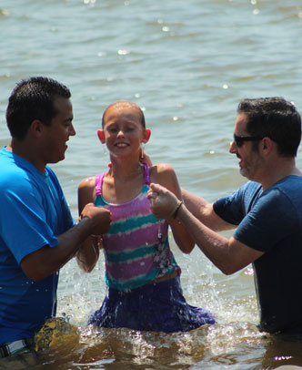
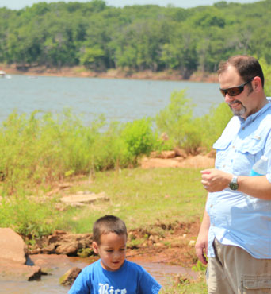
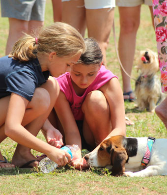
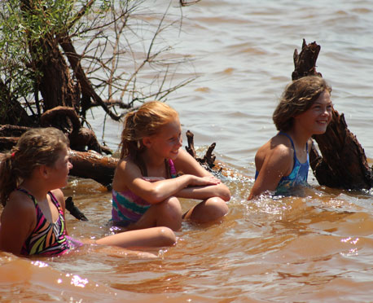
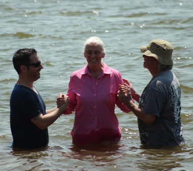
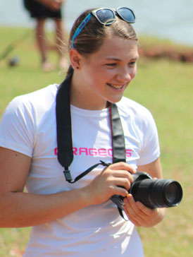

July 13, 2013
| Each year our church gathers at Lake Arcadia
for a baptism and cookout gathering. This year we were blessed with
"less than torture" levels of heat for mid-July. This has
been the coolest July I can remember. We were all grateful for the
chance to get together and celebrate the new life we all
share. Eric was still in Montana so he missed out this year,
but I'm sure he was having a great time with his brothers. |
|
|
 |
|
| Candice and Marguerite | Levi, Kayla, and Micah |
 |
 |
| Nathaniel & Mark | Kevin & Larissa's girls, being sweet to the Basset puppy |
 |
 |
| My Montana relatives wonder why I'm so amazed by their clear water | Myra with Micah and Pastor Ken |
| Lori & Dan Adams with Tim | Candice kindly took this for me |
 |
|
| Tanisha | Shocking!! |